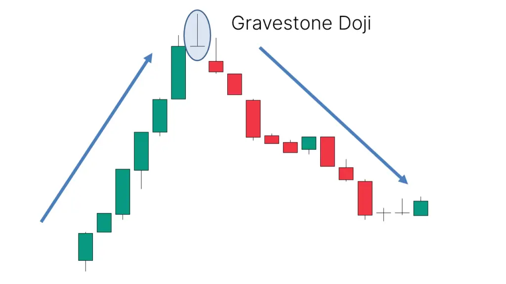

கிரேவ்ஸ்டோன் டோஜி முறைமை ஒரு வணிக முறைமையாகும், அது பங்கு சந்தையில் உயர்ந்த
மாற்றங்களைக் குறிக்கின்றது மற்றும் கீழ்முக மாற்றங்களின் அறிகுறிகளைக் காட்டுகின்றது.
இந்த முறைமை ஒரு கேண்டல்ஸ்டிக் மூலம் உருவாக்கப்படுகின்றது, இது அதன்
திறந்த விலையையும், உடலின் நீளத்தை விட நீளமான வாலையும் கொண்டு இருக்கின்றது.
கிரேவ்ஸ்டோன் டோஜி முறைமை ஒரு வலிமையான கீழ்முக மாற்றங்களின் எச்சரிக்கையை
கொடுக்கின்றது. இந்த முறைமையை காணும்போது, நீங்கள் பங்கு சந்தையில் கீழ்முக மாற்றங்களின்
காணி மேல் வணிகம் செய்யலாம்.
